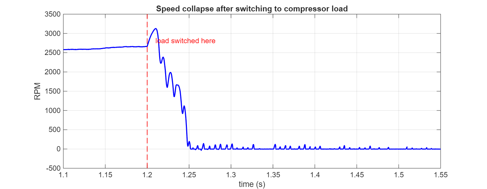
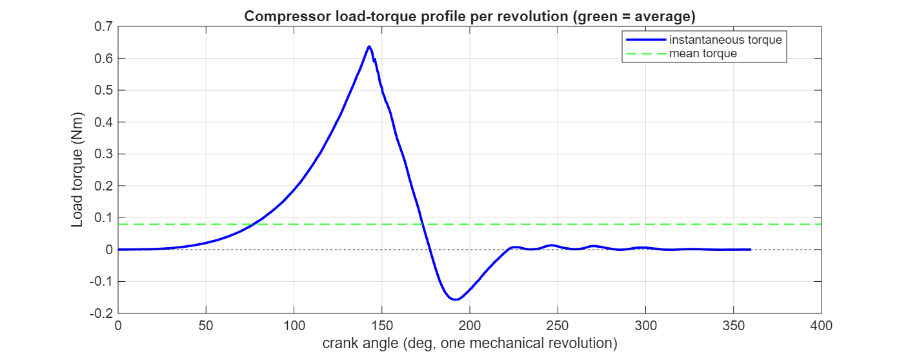
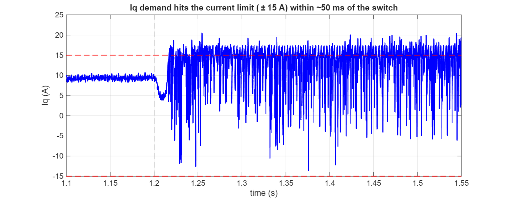
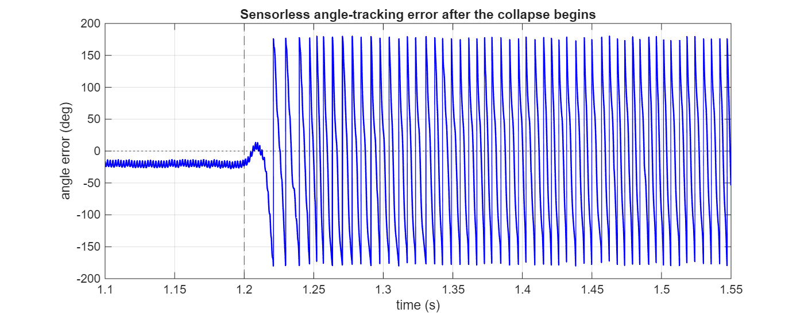

My_1SH_FOC — internal reference
What happens when the constant 0.11 Nm test load is swapped for the real single-cylinder compressor profile mid-run, why it stalls within ~100 ms, and a prioritized strategy for making it survive.
The model runs the sensorless startup and holds steady around 2500–3000 RPM cleanly with a constant 0.11 Nm load. Switching the load (via the Manual Switch feeding compressorLoadProfile's output into the mechanical model) over to the real, measured single-cylinder compressor torque profile while running produces about two revolutions of apparently-successful compression, then a stall.
Reproducing this directly (switch triggered at t=1.2 s, motor at ~2665 RPM, same sensorless-closed-loop state as the working baseline) gives the same result on a clean, controlled timeline:

The measured profile (BDN45F - Measured Cylinder Pressures.xlsx, via ss_load_torque_data.m) looks like this over one mechanical revolution:

That's a peak-to-average ratio of roughly 8:1 — the defining signature of a reciprocating (single-cylinder) compressor load, compared to a fan/blower-type load that's nearly constant. The motor doesn't need more average torque capability than it already has (it's already running fine at 0.11 Nm, comfortably above the 0.079 Nm average) — it needs to be able to deliver a short, sharp burst roughly 8× that average, once per revolution, and absorb a smaller negative burst right after.
Logging Iq, the real electrical speed/angle (w_ele/theta_ele), and the sensorless estimate (we_est_next/theta_est_next) through the switch and collapse shows a clear two-stage failure:

Iq around the switch. Peak demand reaches 22.6 A against a configured limit (p.IqMax_A) of 15 A.The moment the compression stroke's torque ramps up, the speed/current loop asks for more current than the system is allowed (or able) to deliver. Capped at 15 A, the motor physically cannot produce the ~0.64 Nm the load demands at that instant — torque production falls short, and the rotor decelerates hard, immediately, with nothing in the system absorbing the shortfall.

Observer_PLL_Explained.html), it blows out past ±90° within ~150 ms of the stall starting.Once real speed crashes well below the range the observer can track reliably (see p.MinStartUpValidSpeed and the whole discussion of why the observer needs a minimum back-EMF to work at all), the angle estimate itself comes unglued. At that point the Park-transform reference frame is wrong, meaning the current that is available may no longer even be pushing in a useful direction — compounding stage 1 rather than helping recover from it. This is why the stall, once it starts, doesn't recover on its own: it isn't just "not enough torque," it's "not enough torque, then losing the ability to apply what torque there is correctly."
A reciprocating compressor's whole premise is that something in the drivetrain stores energy during the low-torque part of the cycle and gives it back during the compression stroke — normally a mechanical flywheel. Without one (or with too little rotor inertia to act as one), the motor+controller alone has to supply the full 8×-average peak on demand, every revolution, which is a much harder ask electrically than supplying a steady average.
This model's motor inertia (BDnano.Motor.J_Inertia = 1.512e-5 kg·m²) is sized for a small nano/EV drive — not for buffering a reciprocating load. Worth checking directly: does the real target hardware have a flywheel (or enough added rotor/coupling inertia) on this shaft? If yes, it needs to be reflected in this model's inertia for the simulation to mean anything for this load case. If the real hardware genuinely has this little inertia, the strategy below becomes load-bearing rather than optional.
Before any control change: find out whether the actual hardware has a flywheel or enough coupled inertia to buffer an 8:1 peak-to-average torque ratio. This is the single highest-leverage fact in this whole investigation — if it's missing, no amount of current-loop tuning fixes a problem that's fundamentally "not enough stored energy to coast through the stroke." If it exists physically but isn't in this Simscape model, add it to the plant's inertia before judging any other fix by simulation results.
The load profile is a fixed, known function of crank angle (not a random disturbance) — exactly the situation feed-forward control is built for. Right now, the speed-loop PI only reacts after speed has already sagged. Adding the expected torque directly to the current reference, synchronized to the measured/estimated angle, lets current start rising in anticipation of the stroke instead of in response to its damage:
Caveat worth stating plainly: feed-forward reduces how much the speed loop has to react and how late, but it doesn't change the peak current the motor must ultimately supply — if 22.6 A is genuinely needed and the limit is a hard 15 A ceiling (thermal, hardware, or shunt-sensing range), feed-forward alone won't be enough. It's a strong complement to item 1, not a substitute for it.
p.IqMax_A = 15 and the demand peaked at 22.6 A — a 50% shortfall. Worth separately checking two different limits that could each be the real ceiling:
p.MaxReadableCurrent_A), or a conservative application-level setting that has headroom to raise?p.VphaseMaxLinear ≈ 6.93 V is not a lot of headroom on a 12 V system). If the current loop is also voltage-saturated at this speed, raising IqMax_A alone won't help — the duty cycle has nowhere left to go to push more current through the inductance in time. This needs checking directly (log the modulation index / duty cycle through the same transient) before concluding more current headroom is the fix.Switching from constant to full-amplitude compressor load in one step presents the entire 8:1 peak instantly, with the control loops in whatever state they happened to be in. Blending the profile's amplitude in over a handful of revolutions (0% → 100%) gives the loops (and any feed-forward) a chance to adapt progressively rather than being hit cold. This won't fix a fundamental capability shortfall (items 1–3), but it's cheap to add and removes "a transient none of the loops were prepared for" as a confounding factor when testing the other items.
At ~2665 RPM the mechanical revolution rate is ~44 Hz — the load disturbance repeats at that rate. p.SpeedLoopFreq_Hz=2083 gives plenty of raw execution rate, but the loop's effective closed-loop bandwidth (set by Speed_Kp/Speed_Ki) is what actually matters for tracking a 44 Hz disturbance — worth confirming it's not the limiting factor once items 1–3 are addressed, same "bandwidth vs. disturbance frequency" framing as the PLL discussion in Observer_PLL_Explained.html.
| Item | Status | Basis |
|---|---|---|
| Stall is caused by current saturation at the compression peak | tested | Directly measured: 22.6 A demanded vs. 15 A limit, at the exact moment of collapse. |
| Sensorless angle tracking loses lock as a secondary, compounding effect | tested | Directly measured: angle error grows from ~20° to >90° within ~150 ms of the speed collapse starting. |
| Load profile's peak-to-average ratio is ~8:1 | tested | Computed directly from ss_load_torque_data.m's output: mean 0.079 Nm, peak 0.637 Nm. |
| A flywheel / added inertia would fix this | proposed | Standard practice for reciprocating-load drives; not yet tested in this model (would require changing J_Inertia and re-running). |
| Feed-forward torque compensation would help | proposed | Sound in principle for a known, angle-synchronous disturbance; not yet implemented or tested here. |
| 15 A is the real ceiling (vs. voltage-limited) | not yet checked | Needs a modulation-index/duty-cycle log through the same transient to confirm which limit actually binds first. |